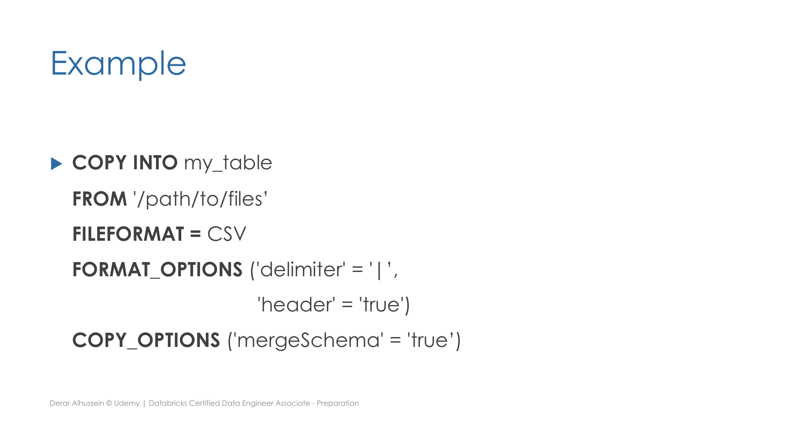
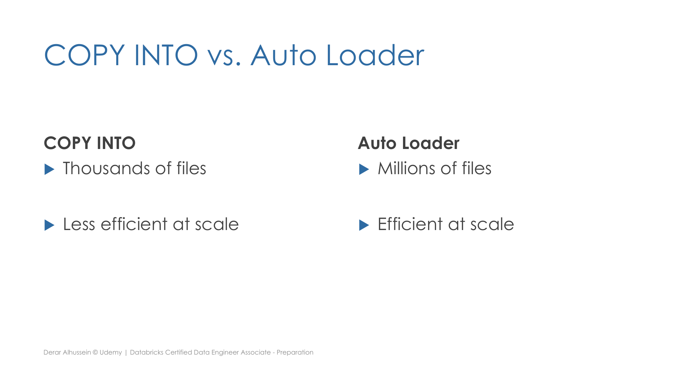

Section 2 · Data Ingestion and Loading · Quelle: Udemy-Kursmaterial „Incremental Data Ingestion from Files“, ergänzt mit Databricks-Dokumentation
Kapitel 1 dieser Section hat COPY INTO und Auto Loader bereits im Überblick vorgestellt, Kapitel 6 die Schema-Mechanik von Auto Loader vertieft. Dieses Kapitel ergänzt die fehlende Entscheidungsgrundlage: konkrete Größenordnungen, ab wann welches Werkzeug sinnvoll ist, sowie eine bislang nicht gezeigte COPY INTO-Syntaxvariante mit FORMAT_OPTIONS.
Neben COPY_OPTIONS (steuert das Verhalten des Ladevorgangs selbst, z. B. mergeSchema) unterstützt COPY INTO zusätzlich die Klausel FORMAT_OPTIONS, mit der sich Eigenschaften des Quelldateiformats festlegen lassen – etwa Trennzeichen oder ob die erste Zeile eine Kopfzeile ist:
COPY INTO my_table
FROM '/path/to/files'
FILEFORMAT = CSV
FORMAT_OPTIONS ('delimiter' = '|', 'header' = 'true')
COPY_OPTIONS ('mergeSchema' = 'true');

Bei der Wahl zwischen COPY INTO und Auto Loader gibt Databricks eine konkrete Faustregel für die erwartete Größenordnung der eingehenden Dateien vor:
| COPY INTO | Auto Loader | |
|---|---|---|
| Empfohlen ab | Dateien im Bereich von Tausenden | Dateien im Bereich von Millionen oder mehr |
| Verarbeitungskapazität | Weniger effizient bei sehr großer Skalierung | Kann laut Databricks auf Milliarden von Dateien skalieren, mit nahezu Echtzeit-Ingestion von Millionen Dateien pro Stunde |
| Verarbeitungsmodus | Ein Batch pro Aufruf | Teilt die Verarbeitung automatisch in mehrere Micro-Batches auf, dadurch effizienter bei Skalierung |
Databricks empfiehlt Auto Loader entsprechend generell als Best Practice für die Ingestion aus Cloud-Objektspeicher, sobald mit wachsenden oder sehr großen Dateimengen zu rechnen ist – COPY INTO bleibt vor allem für überschaubare, wiederkehrende Batch-Ladevorgänge geeignet (siehe auch die Priorisierungsregel in Kapitel 8 dieser Section).

Die Checkpointing-, Fehlertoleranz- und Exactly-Once-Mechanik von Auto Loader wurde bereits generisch in Section 3 (Kapitel zu Spark Structured Streaming) erklärt – sie gilt unverändert auch hier, da Auto Loader intern auf Structured Streaming aufbaut. Der Effizienzvorteil bei großen Dateimengen entsteht dadurch, dass Auto Loader neue Dateien nicht bei jedem Lauf vollständig aus dem Zielverzeichnis neu auflisten muss (siehe Erkennungsmodi in Kapitel 6), sondern den bereits verarbeiteten Zustand fortlaufend fortschreibt – COPY INTO muss dagegen bei jedem Aufruf den gesamten Quellpfad neu abgleichen, was mit wachsender Dateizahl zunehmend ins Gewicht fällt.
COPY INTO sich für Datenquellen mit insgesamt wenigen Millionen Dateien eignet, während Auto Loader zusätzlich Vorteile bei der Dateierkennung (Directory Listing vs. File Notification, siehe Kapitel 6) und bei komplexen, sich häufig ändernden Verzeichnisstrukturen bietet. Beide Befehle sind zueinander nicht redundant: In produktiven Pipelines wird gelegentlich mit COPY INTO ein einmaliger historischer Backfill durchgeführt, während der laufende Betrieb anschließend auf Auto Loader umgestellt wird.